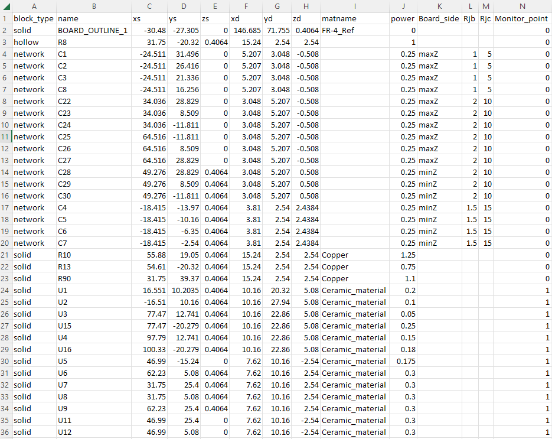

Note
Go to the end to download the full example code
Icepak: Creating blocks and assigning materials and power#
This example shows how to create different types of blocks and assign power and material to them using a *.csv input file
Perform required imports#
Perform required imports including the opertaing system, regular expression, csv, Ansys PyAEDT and its boundary objects.
import os
import re
import csv
from collections import OrderedDict
import pyaedt
from pyaedt.modules.Boundary import BoundaryObject
Set non-graphical mode#
Set non-graphical mode.
You can set non_graphical either to True or False.
non_graphical = False
Download and open project#
Download the project, open it, and save it to the temporary folder.
temp_folder = pyaedt.generate_unique_folder_name()
ipk = pyaedt.Icepak(projectname=os.path.join(temp_folder, "Icepak_CSV_Import.aedt"),
specified_version="2023.2",
new_desktop_session=True,
non_graphical=non_graphical
)
ipk.autosave_disable()
Initializing new desktop!
True
Import the CSV file#
Import the CSV file that lists the name of blocks, their type and material properties.
Block types (solid, network, hollow), block name, block starting and end points, solid material, and power are listed.
Hollow and network blocks do not need the material name.
Network blocks must have the Board side listed as well as Rjb and Rjc values.
Monitor points can be created for any types of block if the last column is assigned to be 1 (0 and 1 are the only options).
The following image does not show the entire rows and data and only serves as a sample.
{kind=link}
Defining a function for network block types#
This function will be called in the next step if the blcok type is network. It will read the board side as well as thetaj values and assign them to the block.
def create_2R_network_BC(object3d, power, rjb, rjc, board_side):
board_side = board_side.casefold() # returns the board side with all letters in lower case
if board_side == "minx":
board_faceID = object3d.bottom_face_x.id
case_faceID = object3d.top_face_x.id
case_side = "maxx"
elif board_side == "maxx":
board_faceID = object3d.top_face_x.id
case_faceID = object3d.bottom_face_x.id
case_side = "minx"
elif board_side == "miny":
board_faceID = object3d.bottom_face_y.id
case_faceID = object3d.top_face_y.id
case_side = "maxy"
elif board_side == "maxy":
board_faceID = object3d.top_face_y.id
case_faceID = object3d.bottom_face_y.id
case_side = "miny"
elif board_side == "minz":
board_faceID = object3d.bottom_face_z.id
case_faceID = object3d.top_face_z.id
case_side = "maxz"
else:
board_faceID = object3d.top_face_z.id
case_faceID = object3d.bottom_face_z.id
case_side = "minz"
# Define network properties in props dictionary
props = {}
props["Faces"] = [board_faceID, case_faceID]
props["Nodes"] = OrderedDict(
{
"Case_side(" + case_side + ")": [case_faceID, "NoResistance"],
"Board_side(" + board_side + ")": [board_faceID, "NoResistance"],
"Internal": [power + 'W'],
}
)
props["Links"] = OrderedDict(
{
"Rjc": ["Case_side(" + case_side + ")", "Internal", "R", str(rjc) + "cel_per_w"],
"Rjb": ["Board_side(" + board_side + ")", "Internal", "R", str(rjb) + "cel_per_w"],
}
)
props["SchematicData"] = OrderedDict({})
# Default material is Ceramic material
ipk.modeler.primitives[object3d.name].material_name = "Ceramic_material"
# Create boundary condition and set Solve Inside to No
bound = BoundaryObject(ipk, object3d.name, props, "Network")
if bound.create():
ipk.boundaries.append(bound)
ipk.modeler.primitives[object3d.name].solve_inside = False
Final stage to create the blocks#
It will loop over the csv file lines and creates the blocks. It will create solid blocks and assign BCs. Every row in the list has information of a particular block. This information is extracted via a “for” loop. For example, rows[i][1] is the first item in the list that has the block name information.
for i in range(len(rows)):
origin = [float(rows[i][2]), float(rows[i][3]), float(rows[i][4])] # blcok starting point
dimensions = [float(rows[i][5]), float(rows[i][6]), float(rows[i][7])] # blcok lengths in 3 dimentions
block_name = rows[i][1] # blcok name
block_name = re.sub("\W", "_", block_name)
# Define material name
if rows[i][8] == "":
material_name = "Al-Extruded"
else:
material_name = rows[i][8]
# creates the block with the given name, coordinates, material, and type
block = ipk.modeler.primitives.create_box(origin, dimensions, name=block_name, matname=material_name)
# Assign boundary conditions
if rows[i][0] == "solid":
ipk.create_source_block(block_name, rows[i][9] + "W", assign_material=False, use_object_for_name=True)
elif rows[i][0] == "network":
create_2R_network_BC(block, rows[i][9], rows[i][11], rows[i][12], rows[i][10])
else:
ipk.create_source_block(block_name, rows[i][9] + "W", assign_material=False, use_object_for_name=True)
ipk.modeler.primitives[block.name].solve_inside = False
# Create temperature monitor points if assigned value is 1 in the last column of the csv file
if rows[i][13] == '1':
# calculates the location of the monitoir point based on the starting point an dlength of the block
mon_loc_x = float(rows[i][2]) + 0.5 * float(rows[i][5])
mon_loc_y = float(rows[i][3]) + 0.5 * float(rows[i][6])
mon_loc_z = float(rows[i][4]) + 0.5 * float(rows[i][7])
mon_loc = [mon_loc_x, mon_loc_y, mon_loc_z]
ipk.assign_point_monitor(mon_loc, monitor_name=block_name) # creates the monitor point
C:\actions-runner\_work\pyaedt\pyaedt\examples\04-Icepak\Icepak_CSV_Import.py:7: DeprecationWarning: invalid escape sequence '\W'
###############################################################################
C:\actions-runner\_work\pyaedt\pyaedt\testenv\lib\site-packages\pyaedt\modeler\modeler3d.py:60: DeprecationWarning: The property `primitives` is deprecated.
Use `app.modeler` directly to instantiate primitives methods.
warnings.warn(mess, DeprecationWarning)
Fit to scale, save the project#
This will scale to fit all objects in AEDT and save the project.
ipk.modeler.fit_all()
ipk.save_project()
True
Closing and releasing AEDT#
Release the AEDT session. If this step is missing, AEDT cannot be closed.
ipk.close_project()
ipk.release_desktop(True, True)
True
Total running time of the script: (1 minutes 3.244 seconds)